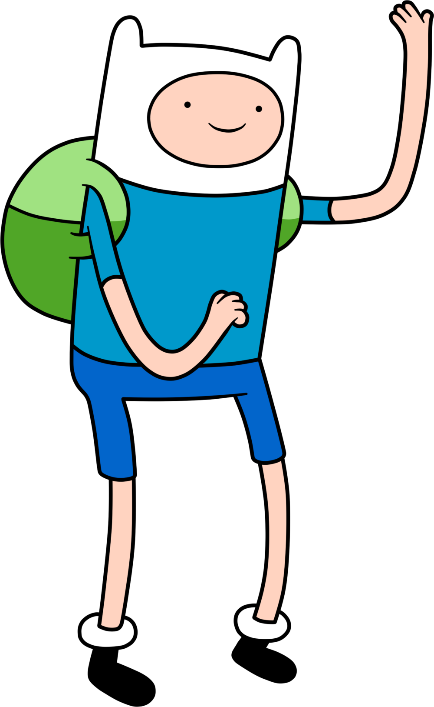
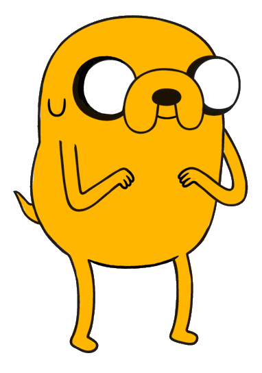
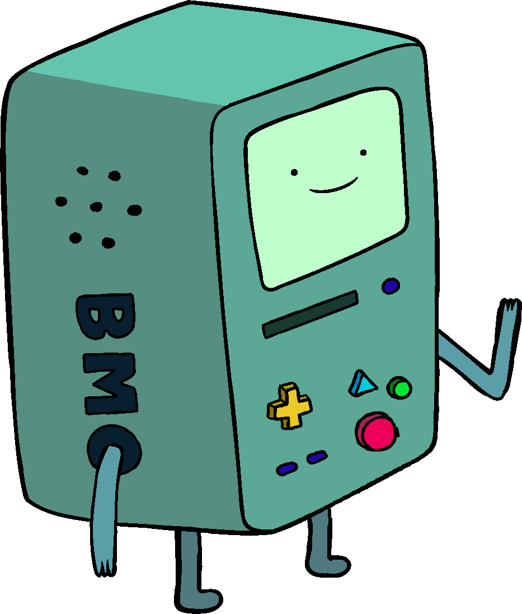
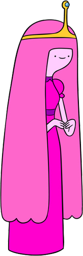
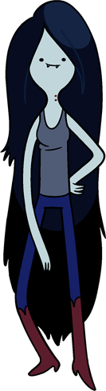
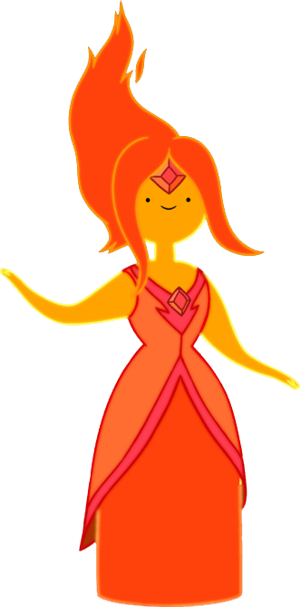
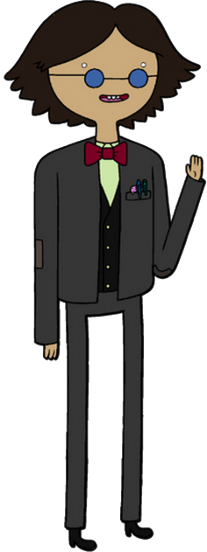
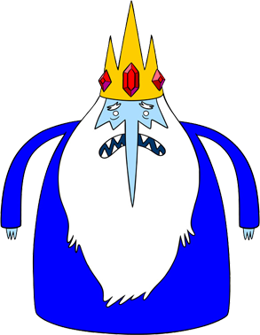
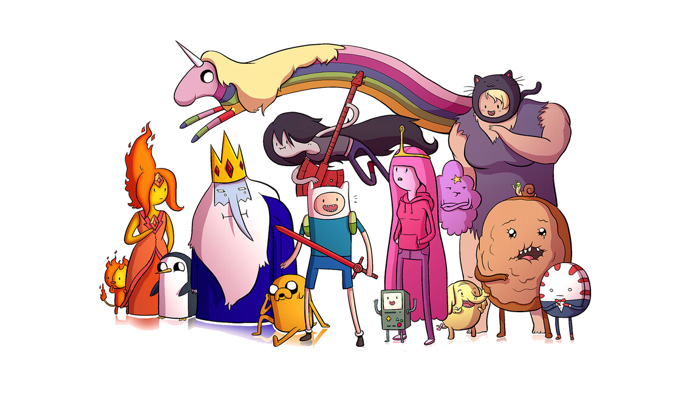
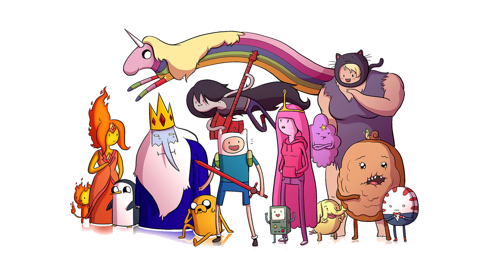

Although at times impulsive and aggressive, Finn is a kind, brave, selfless, and righteous boy. His aspirations to become a great hero makes him somewhat of a moral sheriff in the Land of Ooo, as he is willing to help and protect any innocent person or creature. Finn has a very strong sense of responsibility and becomes upset when he is unable to help others. Due to this and being somewhat simple-minded, Finn often feels conflicted when it is unclear whether something is good or evil.While he portrays himself as a rough and tough hero, Finn has a tender side that is capable of love and compassion, as shown by his boyhood crush on Princess Bubblegum and his brotherly relationship with Jake. Finn is also able to act like a gentleman when it comes to ladies. However, Finn seems to hate romantic scenes to the point of vomiting. It is shown that Finn believes that "imagination is for turbonerds who can't handle how kick-butt reality is" and that he finds real-life to be better than anything imaginary. As a courageous warrior and a fearless thrill-seeker, Finn enjoys putting himself in the midst of danger simply because he enjoys a challenge.

Jake is generally laid-back and tends not to worry about things. He relies heavily on his powers (or Finn) to get him out of any dangerous predicament. While he often cracks jokes at serious times, Jake always has a lecture or a song to cheer Finn up if he is feeling disheartened. Acting as Finn's world-wise mentor, Jake is always willing to give input and advice about a situation, but his suggestions are usually inconsistent, ranging from encouraging and helpful suggestions to ridiculous nonsense. He can be somewhat irresponsible at times, frequently leaving Finn to fight most of a battle on his own, but he always pulls through when he is needed most. ake may be dyslexic, as evidenced by the fact that he writes backward. Jake also possesses symptoms of ADHD. He can literally forget about a conversation in a moment and start doing something completely unrelated, such as putting an ice cream cone in a toaster. At times, Jake is shown to have somewhat of a dark side as Jake makes some questionable comments and actions that come off as evil or selfish.

BMO is Finn and Jake's living video game console system, portable electrical outlet, computer, music player, VCR, video player, video editor, roommate, camera, alarm clock, toaster, flashlight, strobe light, skateboarder, soccer player, tape player, chef, detective, and friend. He makes his appearance in the title scene of the Theme Song of every episode of Adventure Time, just as Finn and Jake pound their fists together. BMO is characterized as a loyal, trusting and helpful robot who is protective of Finn and Jake.BMO is a medium-sized teal/blue-green gaming device, sometimes appearing with one or two controllers attached to them. When not being played, they have an 8-bit face. BMO is about 12.25 inches wide and 20.1 inches tall. BMO's front includes an arrow pad, a floppy disk slot, multiple different shape buttons, two controller sockets, and of course the face, or screen. There is also a compartment with a red button hidden underneath the yellow D-pad. BMO's operating system known as BMOS (abbreviated from "Be More Operating System") is somewhat similar to that of a Windows/Macintosh hybrid computer with a graphical interface and drag-and-drop file manager.

Princess Bonnibel "Bonnie" Bubblegum is typically kind, good-hearted and well-mannered, she can be very temperamental and has shown a malicious aspect of her personality whenever she is crossed. She was willing to break into and search the King of Ooo's blimp for evidence to support her suspicions against him, believing him to be a fraud, and went as far as to arrest him and several others in an effort to silence him.Even with her kind disposition, her moral code is not as strict as Finn's and there are also hints of a darker aspect of her personality. It is implied that Finn has saved Princess Bubblegum more than a few times. As the series continues she learns to defend herself with science. It also seems that she has had previous run-ins with Marceline the Vampire Queen (who is one of only two known characters who call her by her real name Bonnibel or just Bonnie, the other being Flame Princess), but both of them are now close friends. Princess Bubblegum also performs scientific experiments, which vary from highly successful to catastrophic.

Marceline is a fun-loving and playful 1,000-year-old vampire queen. Unlike a traditional vampire, Marceline does not need to drink blood to survive; rather, she consumes the colour red, or other similar tints. Marceline is also an avid musician who plays an electric bass guitar, which she crafted from her family's heirloom battle-axe. Marceline is a half-human/half-demon, turned into a half-vampire/half-demon after being bitten, and the eponymous Vampire Queen, after having killed the previous Vampire King many years prior to the start of the show. Although she is 1,000 years old, she takes on the physical appearance of a teenager.Having spent centuries traversing the Land of Ooo, she has evolved into a "fearless daredevil", and her fondness for mischief has turned her into something of a trickster. Consequently, in her first role, Marceline functions as the antagonist of the story, forcing Finn and Jake from their home. However, she eventually becomes their close friend once Finn recognizes that she is "a radical dame who likes to play games".

Flame Princess, whose name is Phoebe and who is occasionally called FP, is the current ruler of the Fire Kingdom as well as Finn's ex-girlfriend. When Jake asks Flambo if he knows any princesses that are Finn's age so he can fix his broken heart, he introduces Jake to Flame Princess. Flame Princess was locked away in a lantern in the main chamber of the Fire Kingdom when Jake first encounters her. It is later revealed that her father, the Flame King, put her there on Princess Bubblegum's advice when she was an infant, and she did not come out for 14 years. She has a short temper, trust issues, and a heat core that can destroy the world if overblown with emotions. She is also close friends with Cinnamon Bun. Flame Princess has a short temper and volatile personality; she usually has a calm demeanor, though with rather frequent tendencies to sudden and violent mood swings. She is described as "passionate" by Finn, "evil" by the Flame King, and "intense" by Pendleton Ward. She seems to have become more serious and dislikes how people "hide" facts from her. She wonders if "everybody is hiding something" and wants people to be completely honest so that she can get to know them better and as well not getting herself tricked.

Simon is known for his intelligence, kindness, and self-sacrifice. Simon was a deeply committed and loving fiancé to Betty his first and only love often calling her his princess, reasonably leading to Ice King's only desire being to marry a princess. He proved to be the same way as a watchful guardian over young Marceline during the aftermath of the Mushroom War. Even when they were in great danger, Simon struggled to keep Marceline happy and helped her to always see the best of their situation. He took on a very responsible role in Marceline's life, by not only protecting her and keeping her healthy but also by teaching her right from wrong and keeping her spirits high (as seen in "Simon & Marcy"). Simon, as a rule, is known for being optimistic even at the worst of times, and it is clearly one of Simon's most notable attributes. Even while being saddled with a great burden, Simon fought an apocalyptic world while fighting the omnipotent influence of the Ice Crown. Some of Simon's innermost thoughts and fears of his inevitable madness were revealed in messages left to Marceline. Simon agonized over abandoning Marceline in a dangerous world due to his deteriorating sanity. However, Simon, nearing the very end of his humanity feared for his own life, worried that as the crown took him from Marceline, no one would be able to "save him." His vulnerability as a human was most evident just before he permanently became the Ice King.
Hide Spoiler

Ice King is a two-dimensional, humorously over-the-top villain trying to kidnap Princess Bubblegum on a regular basis, the character's personality was subsequently expanded, revealing him to be a kind-hearted but misunderstood old man with completely twisted senses of morality and social behavior, suffering from loneliness and memory loss. The Ice King is misunderstood, lonely, and only hopes of marrying a princess. He has been labeled a "sociopath" by the Cosmic Owl, though his personality seems more akin to a person with a narcissistic personality disorder, as he still feels humiliation and guilt. Due to his poor social skills, enduring short attention span and arrogant nature, Ice King is unable to attract any of his prisoners and often resorts to a forced marriage instead of the loving relationship he desires.
Show Spoiler
 
